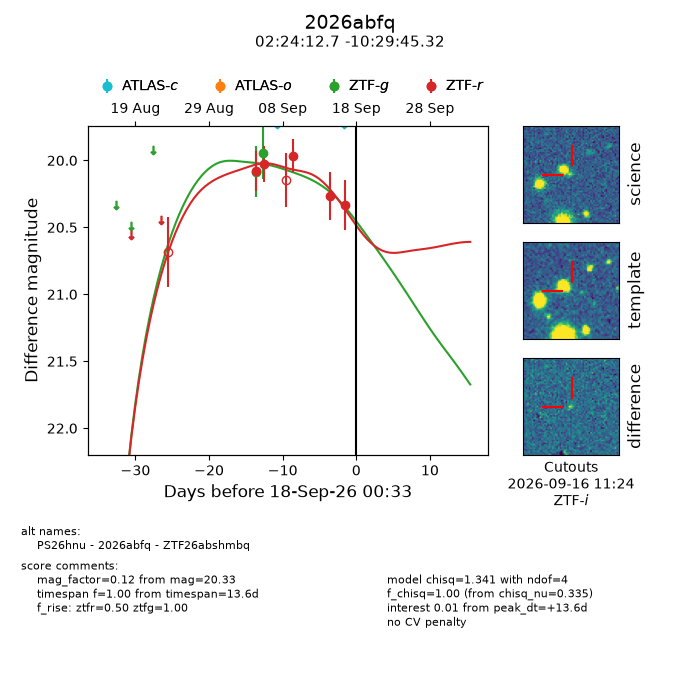
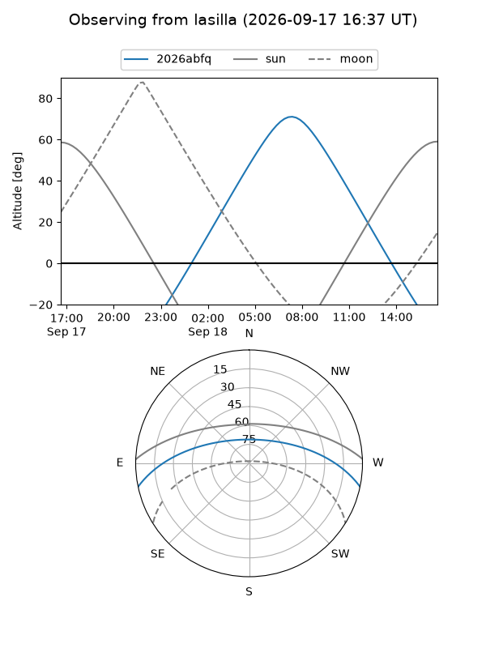
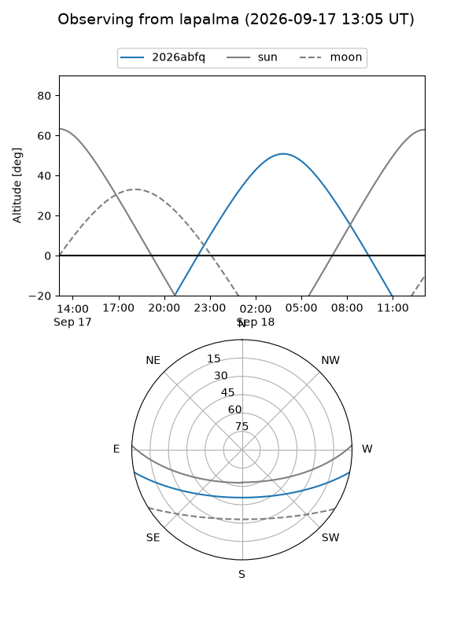
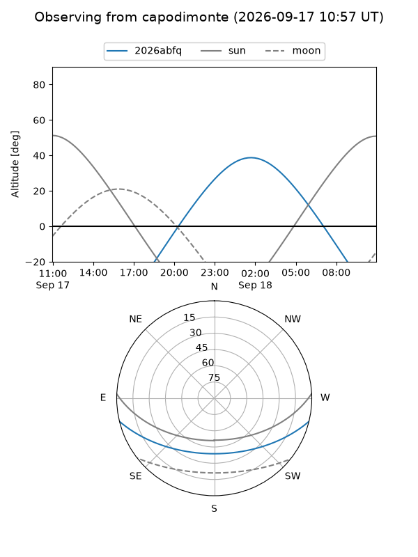
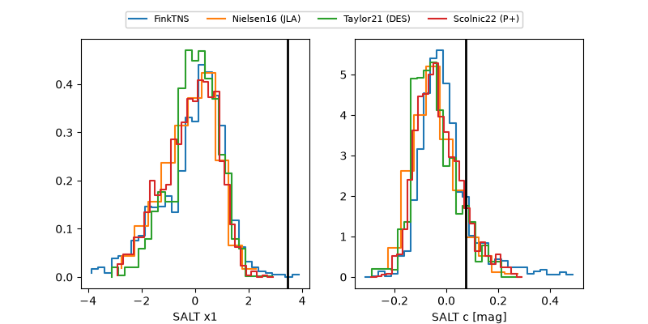

2026abfq
Target 2026abfq at 2026-09-18 12:35
Aliases and brokers:
FINK-ZTF: ztf.fink-portal.org/ZTF26abshmbq
Lasair-ZTF: lasair-ztf.lsst.ac.uk/objects/ZTF26abshmbq
ALeRCE-ZTF: alerce.online/object/ZTF26abshmbq
YSE-PZ: ziggy.ucolick.org/yse/transient_detail/2026abfq
TNS name: wis-tns.org/object/2026abfq
Direct TNS query: direct search
alt names
ZTF26abshmbq (ztf,fink_ztf)
2026abfq (tns,yse)
PS26hnu (panstarrs)
Coordinates:
equatorial (ra, dec) = 36.0530,-10.49592
equatorial (HMS+DMS) = 02:24:12.72,-10:29:45.32
galactic (l, b) = (180.0871,-62.55278)
Flags:
TNS type: nan
peak dt: +14.1
Photometry:
last ztfg=19.94, ztfr=20.33
2 ztfg, 5 ztfr detections
Lightcurve

Visibility



Additional plots
